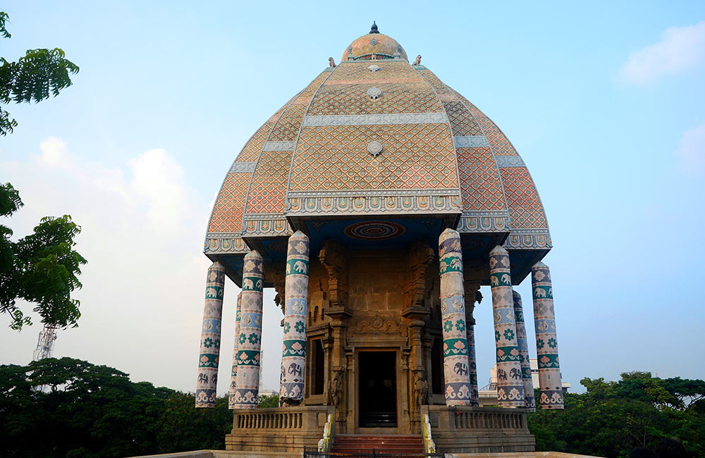

Valluvar Kottam, Chennai
An important historical attraction in the city is Valluvar Kottam, built in memory of the great Tamil philosopher and poet, Thiruvalluvar, who created Thirukkurals, which is considered among the greatest works of Tamil literature. This temple chariot shaped monument was built by M Karunanidhi in the 1970s, who was then serving as the Chief Minister of the state. The architecture of Valluvar Kottam is simply magnificent, with innovative designs and layouts. Locals say that the beauty of this memorial is best witnessed at time of dawn and dusk. Besides being a popular tourist attraction, Valluvar Kottam also hosts several events and exhibitions.
Location: Tirumurthy Nagar, Nungambakkam, Chennai
Timings: 8.30 am to 5.30 pm
Entry Fee: INR 3 for Adults and INR 2 for Children